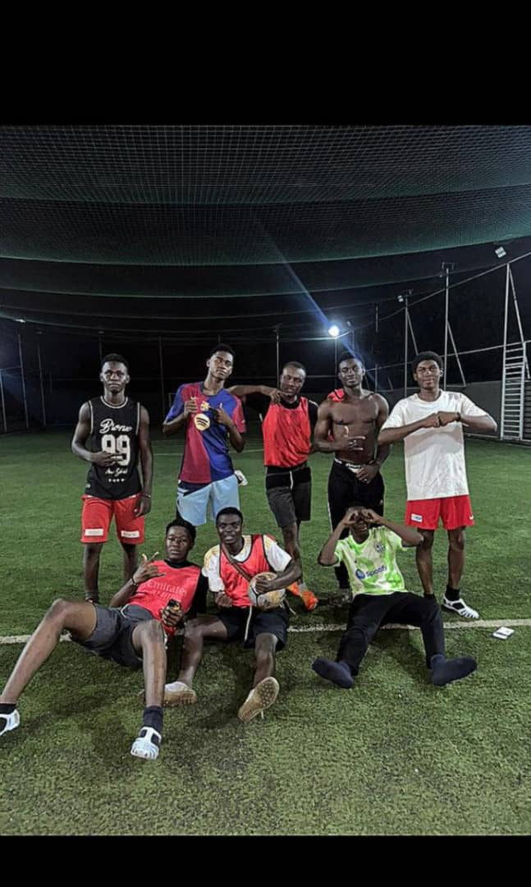

Le sport fait partie intégrante de mon quotidien, et j'ai la chance de pratiquer deux disciplines qui me passionnent : le football et le basket-ball.
Le football, avec son esprit d'équipe et sa dynamique de groupe, m'enseigne la solidarité, la stratégie et la gestion des efforts.
Le basket-ball, quant à lui, développe ma rapidité, ma coordination et mon esprit de compétition.
Ces deux sports me permettent non seulement de rester en forme, mais aussi d'appliquer des valeurs telles que la discipline, la persévérance et la collaboration, qui sont essentielles aussi bien sur le terrain qu'en dehors.
